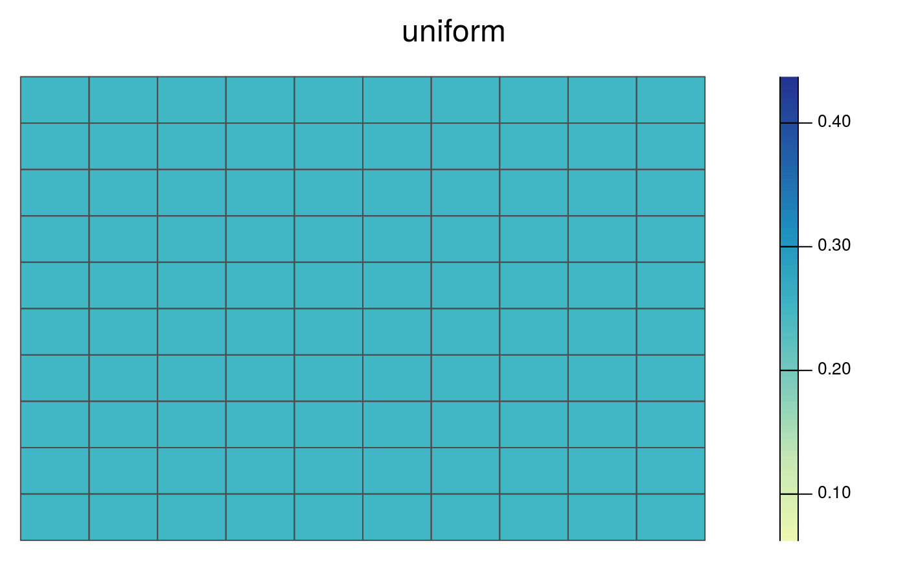
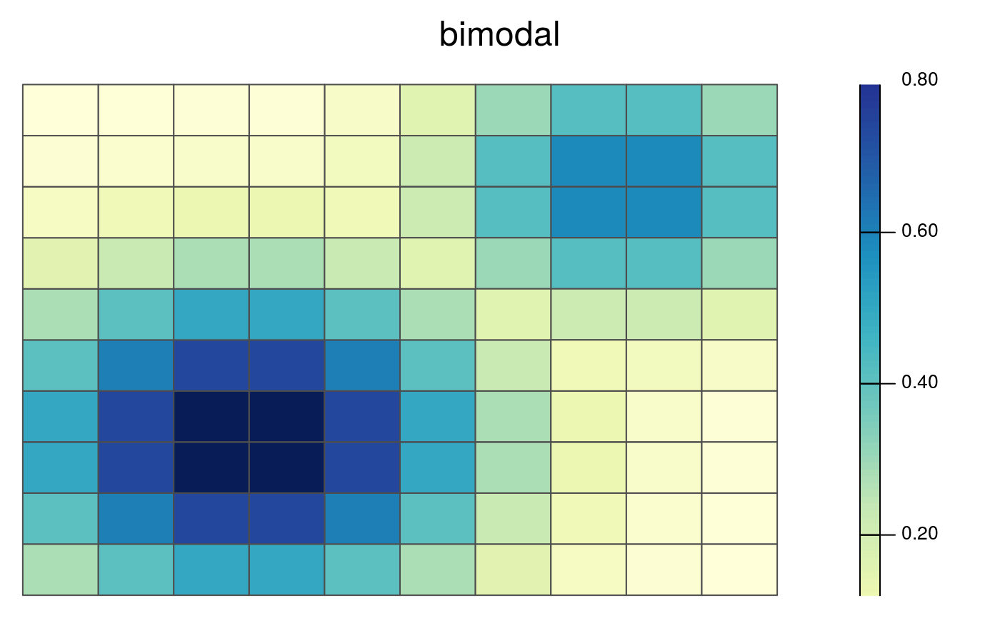

This dataset contains all the data needed to generate prioritizations for three simulated species. This dataset contains planning units, species distribution maps, and demand points for each species. For the purposes of exploring the behaviour of the problem, demand points were generated using the centroids of planning units and the probability that they are occupied by the species. Note that methodology is not encouraged for real-world conservation planning.
Format
RapUnsolved() object with all the simulated data.
RapSolved() object with 5 near-optimal solutions.
Details
The species were simulated to represent various simplified species distributions.
This species has an equal probability (0.5) of occurring in all planning units.
This species has a single range-core where it is most likely to be found. It is less likely to be found in areas further away from the center of its range.
This species has two distinct ecotypes. Each ecotype has its own core and marginal area.
Examples
